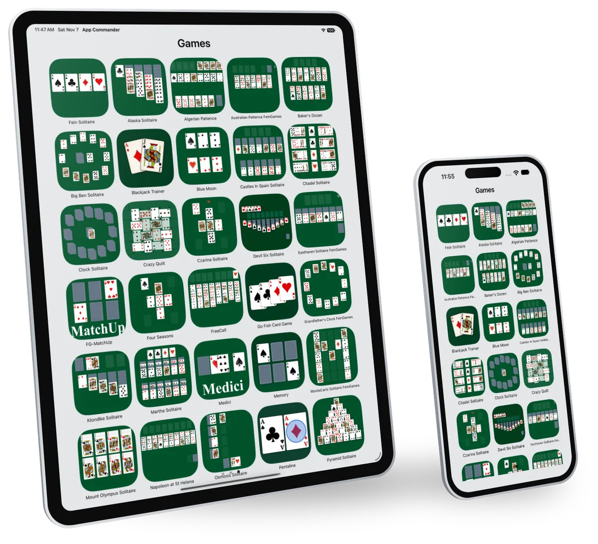
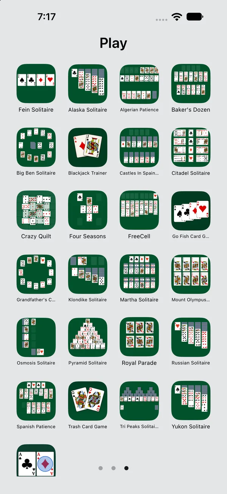
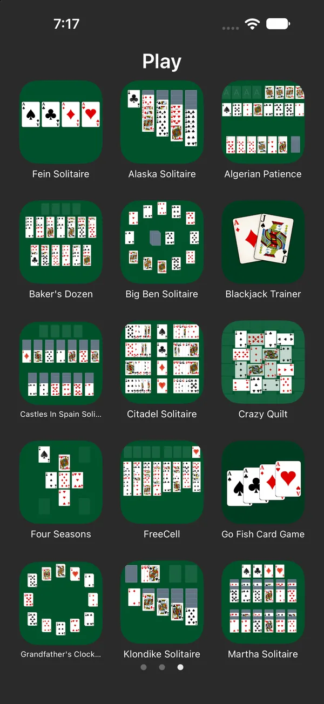
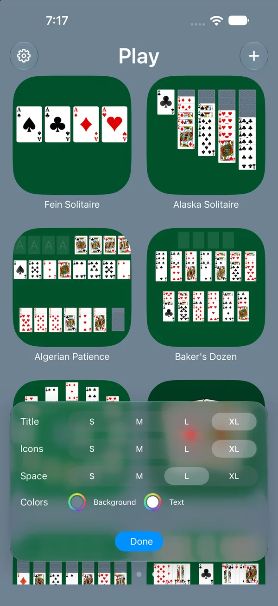
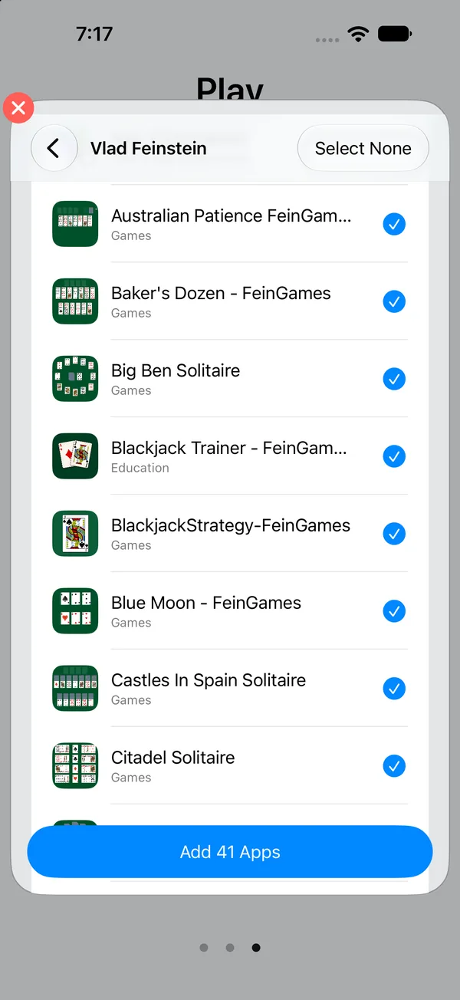

Your apps. Your pages. Your way.
App Commander puts the apps you use on pages you design: Work, Play, Media, whatever fits your day. Choose icon sizes and colors for each page, and launch everything from one place.
For iPhone and iPad with iOS 27 or later. Uses Apple's free Shortcuts app.

Organized the way you think
The Home Screen gives you one grid and one icon size. App Commander gives you as many pages as you need, each with its own look.
Pages for every part of your day
Swipe between Work, Play, Media, or whatever you make. An app can live on several pages at once.
Big icons, your colors
Small to extra-large icons, tight or airy spacing, and background and text colors for each page.
Launch from one place
Tap an icon and the app opens. Add apps from a starter list, by search, or straight from the Home Screen's Share App menu.
Set up in about a minute
Apple doesn't let apps open other apps by themselves, so App Commander uses one small shortcut in Apple's Shortcuts app. App Commander walks you through it.
- Pick your appsCheck the apps you use from a starter list, grouped into pages if you like.
- Add the launch shortcutOne tap adds it to Shortcuts; switch on its automation. App Commander shows a green check when it's working.
- Make it yoursLong-press a page to change icon size, spacing, and colors. Add more pages any time.
A look inside
Light or dark, big icons or dense pages.




Questions
Why does it need a shortcut?
iOS doesn't allow one app to open another app by name. Apple's Shortcuts app can, so App Commander hands the launch to a small shortcut you add once. Apps that support direct links open without it.
Does it replace my Home Screen?
No. Your Home Screen stays as it is. App Commander is a place you open to find and launch your apps, organized your way. Keep it in your Dock for one-tap access.
Do I see the Shortcuts app flash when an app opens?
For apps that support direct links, no. For others, iOS may briefly show the Shortcuts app while it opens the app for you.
What does App Commander know about me?
Nothing leaves your device except App Store lookups for app names and icons. No account, no analytics, no tracking. See the privacy policy.
Which devices does it run on?
iPhone and iPad with iOS 27 or iPadOS 27 or later.
Make your apps feel like yours
Free on the App Store for iPhone and iPad.